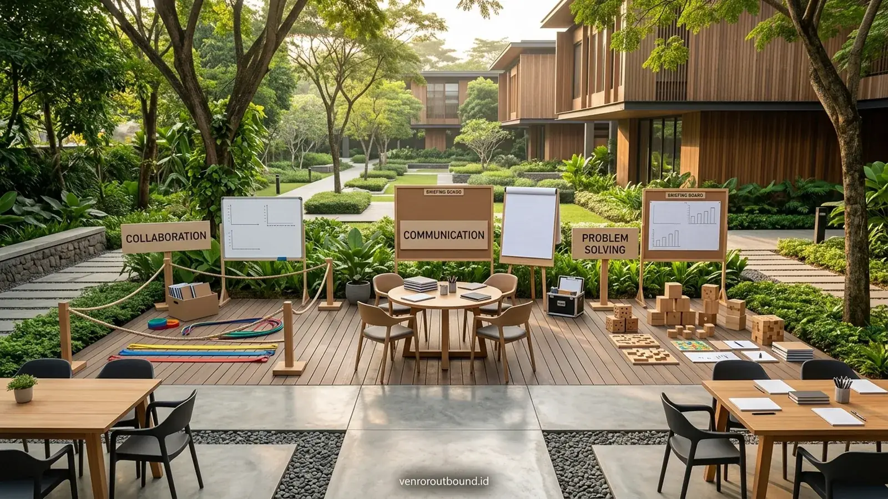
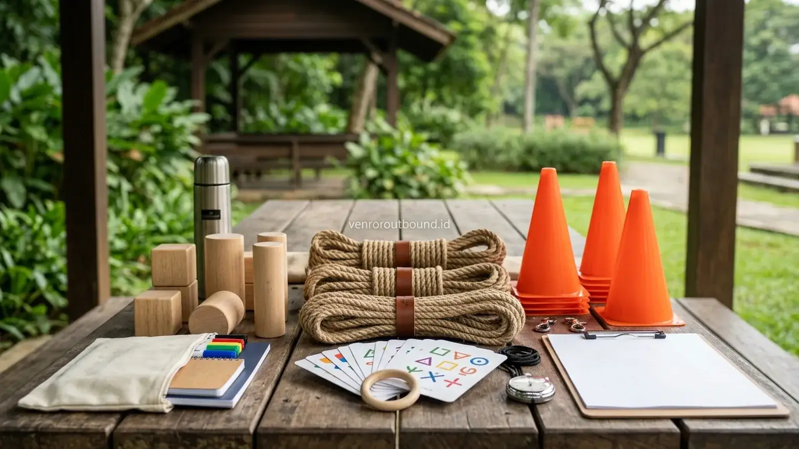
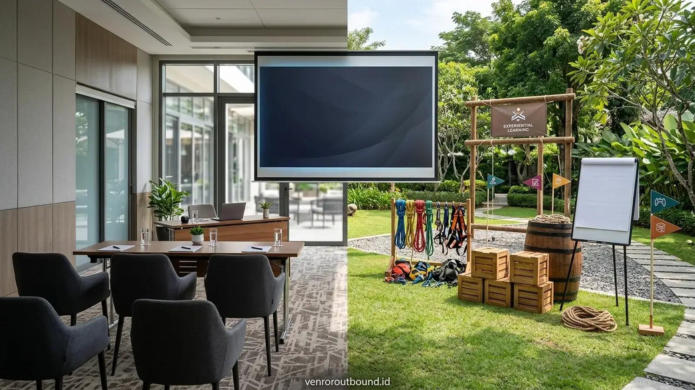

Apa Itu Corporate Culture Alignment dan Mengapa Sangat Penting?
Jawaban singkat: Paket Outbound Onboarding dari Vendor Outbound dapat digunakan sebagai bagian dari program penyelarasan budaya kerja karyawan baru. Aktivitas dirancang secara interaktif untuk membantu peserta memahami nilai perusahaan, berkolaborasi, berkomunikasi, dan merefleksikan pengalaman yang relevan dengan lingkungan kerja. Detail aktivitas, durasi, jumlah peserta, dan fasilitas perlu disesuaikan dengan kebutuhan spesifik perusahaan.
Bagi jajaran HR Director, General Manager, dan tim pimpinan organisasi, salah satu tantangan terbesar saat merekrut talenta baru dalam jumlah besar adalah memastikan seluruh individu memiliki kesamaan persepsi mengenai "cara kita bekerja di sini". Istilah corporate culture alignment merujuk pada proses penyelarasan pemahaman nilai, ekspektasi perilaku kerja, norma komunikasi, dan standar kualitas yang berlaku di dalam ekosistem perusahaan.
Ketika angkatan karyawan baru tidak memiliki keselarasan budaya sejak awal, risiko terjadinya kesalahpahaman antardivisi, benturan ego sektoral, dan ketidakefisienan operasional akan meningkat. Sebaliknya, karyawan baru yang memahami dan merasakan langsung implementasi nilai-nilai perusahaan cenderung menunjukkan inisiatif yang lebih tinggi, lebih terbuka dalam bekerja sama lintas fungsi, dan memiliki rasa kepemilikan yang kuat terhadap tujuan bersama. Di sinilah kehadiran program outbound corporate culture terbukti menjadi instrumen akselerasi yang efektif.
Komponen Layanan yang Dapat Disertakan dalam Paket Onboarding
Sebuah paket orientasi budaya kerja luar ruangan yang profesional haruslah memiliki kejelasan ruang lingkup kerja (*scope of work*). Program ini dirancang melalui konsultasi awal bersama divisi HR internal agar setiap modul simulasi relevan dengan konteks nyata organisasi. Komponen standar yang dapat disesuaikan dalam penawaran meliputi:
| Komponen Layanan | Deskripsi & Fungsi Kegiatan | Status Konfirmasi |
|---|---|---|
| Company Culture Briefing | Sesi pengantar nilai organisasi yang disampaikan pimpinan HR atau fasilitator utama sebelum permainan dimulai. | Sesuai kesepakatan rundown |
| Ice Breaking & Sinergi Tim | Rangkaian game mencairkan kebekuan antardivisi dan meruntuhkan rasa sungkan antarkaryawan baru. | Termasuk dalam paket dasar |
| Culture Simulation Modules | Tantangan permainan terstruktur yang menguji nilai kolaborasi, integritas, akuntabilitas, dan pelayanan. | Sesuai desain kurikulum |
| Problem Solving Challenges | Simulasi pemecahan masalah kelompok yang menuntut koordinasi strategi dan ketelitian eksekusi tim. | Termasuk dalam modul outbound |
| Guided Debrief & Reflection | Sesi perenungan dan diskusi terbimbing pascaaktivitas untuk menarik pelajaran nyata bagi lingkungan kerja. | Wajib di setiap akhir sesi |
| Cultural Commitment Ceremony | Seremoni simbolik peresmian angkatan baru (penandatanganan komitmen atau deklarasi nilai bersama). | Opsi kustomisasi program |
| Perlengkapan Simulasi Lengkap | Seluruh properti game terstandar (tali koordinasi, balok strategi, kartu instruksi, rompi regu). | Disediakan penyelenggara |
| Konsumsi Katering & Snack | Makan siang prasmanan komunal, coffee break hangat, dan air mineral berkala selama kegiatan. | Sesuai proposal tertulis |
| Sound System & Banner Acara | Pengeras suara nirkabel lapangan serta spanduk backdrop bertema budaya organisasi perusahaan Anda. | Disediakan penyelenggara |
| Dokumentasi Foto Kegiatan | Perekaman momen interaksi, antusiasme kelompok, dan foto bersama seluruh angkatan karyawan baru. | Sesuai kesepakatan proposal |

Mempercepat Onboarding Karyawan Baru Lewat Simulasi Budaya Kerja Interaktif
Bagaimana menerjemahkan core values perusahaan menjadi skenario permainan kolaboratif yang mudah diserap.
Memilih Opsi Lokasi Representatif di Kawasan Batu & Malang
Pemilihan tempat penyelenggaraan (venue) sangat berpengaruh terhadap kenyamanan psikologis peserta. Kawasan pegunungan Kota Batu dan Malang menjadi destinasi favorit di Jawa Timur karena menghadirkan kombinasi udara sejuk, pemandangan perbukitan hijau, serta ketersediaan resort dan hotel dengan fasilitas pertemuan yang representatif.
Dalam menyusun proposal kegiatan, kriteria kelayakan lokasi yang wajib diverifikasi meliputi:
- Ketersediaan Lapangan Hijau Terbuka: Kontur tanah datar bebas dari bebatuan tajam yang memungkinkan pergerakan bebas peserta tanpa risiko tergelincir.
- Fasilitas Aula Semi-Indoor atau Pendopo Tertutup: Ketersediaan ruang pertemuan beratap yang sangat krusial sebagai rencana cadangan (contingency shelter) jika hujan turun.
- Aksesibilitas Kendaraan Rombongan: Jalan yang memadai untuk dilalui bus pariwisata besar serta area parkir yang aman dan tertata.
- Sanitasi dan Kebersihan Toilet: Rasio bilik toilet yang mencukupi kebutuhan seluruh rombongan dengan ketersediaan pasokan air bersih yang melimpah.
Untuk kebutuhan pelatihan korporat yang lebih luas, Anda juga dapat meninjau penawaran program outbound corporate kami yang dirancang sesuai profil industri dan jumlah peserta.

Simulasi Alur Rundown Program Onboarding Terpadu (1 Hari)
Berikut adalah contoh simulasi jadwal pelaksanaan program satu hari penuh (Full-Day Onboarding & Culture Alignment) yang dapat dijadikan acuan kerja awal bagi panitia perusahaan:
| Waktu (WIB) | Rangkaian Aktivitas | Keterangan Pelaksanaan & Sasaran |
|---|---|---|
| 08.00 – 08.30 | Kedatangan & Registrasi | Penyambutan peserta di venue, pembagian merchandise/rompi regu, dan welcome drink. |
| 08.30 – 09.30 | Opening & Culture Session | Pemaparan arah budaya kerja oleh pimpinan HR di aula pertemuan semi-indoor. |
| 09.30 – 10.00 | Ice Breaking & Regu Kerja | Pemanasan interaktif di lapangan hijau untuk membentuk kelompok kerja kolaboratif. |
| 10.00 – 12.00 | Culture Simulation Series | Rotasi stasiun tantangan: simulasi kolaborasi, integritas komunikasi, dan akuntabilitas. |
| 12.00 – 13.30 | Ishoma & Lunch Buffet | Makan siang prasmanan bersama dan istirahat ibadah untuk pemulihan energi. |
| 13.30 – 15.00 | Integrated Problem Solving | Tantangan puncak (*synergy challenge*) yang menuntut kerja sama seluruh angkatan secara terpadu. |
| 15.00 – 16.00 | Guided Debrief & Reflection | Sesi perenungan terbimbing: menghubungkan pembelajaran lapangan dengan peran kerja di kantor. |
| 16.00 – 16.30 | Cultural Commitment & Photo | Penandatanganan banner komitmen bersama angkatan dan foto dokumentasi resmi. |
| 16.30 – 17.00 | Penutupan & Persiapan Pulang | Coffee break sore, pengembalian perlengkapan, dan pelepasan rombongan kembali ke kantor. |

Mengapa Program Onboarding Outdoor Lebih Mengesan Dibanding Presentasi Kelas
Kajian objektif mengenai kelebihan dan batasan antara sesi orientasi lapangan dengan pemaparan ruang kelas.
Aspek Keamanan, K3, dan Mitigasi Cuaca Lapangan
Keselamatan peserta merupakan prioritas mutlak yang melandasi seluruh rancangan program luar ruangan kami. Penerapan manajemen risiko Keselamatan dan Kesehatan Kerja (K3) dilaksanakan melalui langkah-langkah nyata:
- Inspeksi Lokasi dan Rintangan: Memeriksa kebersihan area lapangan dari pecahan kaca, semak berduri, atau permukaan tanah licin sebelum peserta memasuki arena.
- Rasio Fasilitator yang Memadai: Menyediakan instruktur pendamping lapangan dengan rasio proporsional (sekitar 1 fasilitator untuk setiap 15–20 peserta) agar setiap dinamika terpantau saksama.
- Kotak P3K Standar & Petugas Medis: Kesiapan obat-obatan antiseptik, perban, minyak penghangat, serta jalur transportasi darurat menuju fasilitas kesehatan terdekat.
- SOP Kontingensi Cuaca: Penyesuaian modul permainan ke area beratap semi-indoor secara cepat dan tertib apabila terjadi hujan deras di lokasi kegiatan.
Mengapa Kejelasan Proposal Menjadi Dasar Kemitraan Terpercaya?
Dalam konteks pengadaan jasa korporat, predikat terpercaya bukanlah sekadar klaim pemasaran, melainkan dibuktikan melalui integritas operasional dan keterbukaan komunikasi. Calon klien dapat menilai profesionalitas penyedia jasa outbound melalui beberapa parameter terukur:
- Rincian Proposal Tertulis yang Gamblang: Mencantumkan rincian fasilitas yang disediakan, batasan tanggung jawab, serta klausul penyesuaian jadwal tanpa ada biaya tersembunyi.
- Kesesuaian Kurikulum dengan Kebutuhan Klien: Bersedia mendengarkan masukan tim HRD dan menyesuaikan tingkat kesulitan permainan dengan profil usia dan latar belakang peserta.
- Transparansi Administrasi dan Legalitas: Kelengkapan dokumen penawaran resmi, nota kesepakatan tertulis, serta sistem faktur pajak perusahaan yang tertib.

Standar Kompetensi Fasilitator Outbound Profesional dan Bersertifikasi Resmi
Memahami pentingnya instruktur yang tersertifikasi dalam mengelola dinamika experiential learning secara aman dan berbobot.
Checklist Persiapan Panitia Perusahaan Sebelum Booking Paket
Sebelum mengonfirmasi slot tanggal pelaksanaan program onboarding, panitia internal perusahaan disarankan memeriksa daftar periksa verifikasi berikut:
| Item Verifikasi Panitia | Poin yang Wajib Dipastikan |
|---|---|
| Kepastian Tanggal & Slot Batch | Tanggal pelaksanaan disepakati oleh manajemen dan lokasi kegiatan telah dikunci ketersediaannya. |
| Profil & Komposisi Peserta | Jumlah pasti karyawan baru beserta data riwayat kesehatan khusus (asma, alergi, cedera fisik). |
| Daftar Fasilitas Tertulis | Rincian menu katering, ruang pertemuan, dan dokumentasi telah tertuang jelas dalam kontrak kerja. |
| Skenario Cadangan Cuaca | Ketersediaan pendopo aula darurat telah disetujui pihak pengelola venue dan vendor. |
| Kontak PIC Lapangan | Nomor kontak langsung koordinator instruktur lapangan telah dicatat oleh ketua panitia acara. |
Konsultasikan Kebutuhan Onboarding Batch Karyawan Anda Bersama Kami
Dapatkan penawaran paket outbound onboarding dan corporate culture alignment yang dapat dikustomisasi sesuai nilai unik perusahaan Anda. Hubungi tim admin Vendor Outbound di +62 82211221909 untuk diskusi konsep dan jadwal survei lokasi.
Hubungi Kami via WhatsAppKesimpulan
Penyelenggaraan paket outbound onboarding dan corporate culture alignment merupakan investasi strategis yang memberikan imbal balik berharga bagi pembentukan budaya kerja perusahaan yang solid. Dengan memadukan pemaparan nilai organisasi, simulasi kolaborasi di alam terbuka yang menyegarkan, serta sesi refleksi terarah yang menyentuh realitas kerja, angkatan karyawan baru dapat bertransisi dengan mulus menjadi tim yang kompak, adaptif, dan siap mencapai target kinerja organisasi bersama-sama.
Pertanyaan Sering Diajukan (FAQ)

Arby Ardiansyah
Praktisi pengembangan SDM dan perancang program experiential learning dengan pengalaman memfasilitasi berbagai kegiatan outbound korporat, team building, dan orientasi budaya kerja karyawan baru di seluruh Jawa Timur.